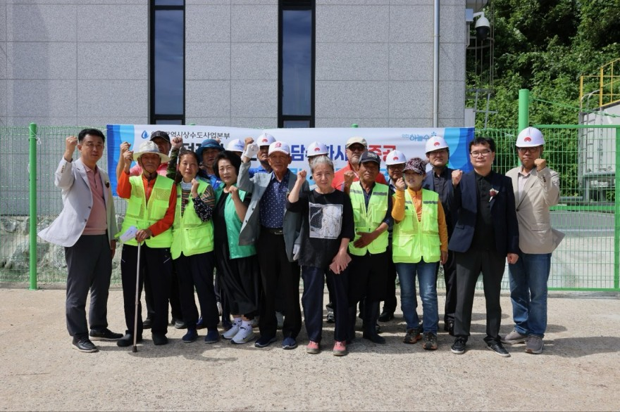

[경세제민의 길] 백령공항, 재생에너지로 짓고 황해 하늘길로 키우자
발전소 증설은 환경평가에 막히고 배후부지 신재생 단지는 빠졌다
갈라파고스 공항은 재생에너지 100%, 코친공항은 태양광 전용
AI경제저널=김갑봉 편집국장 | 백령공항이 타당성재조사를 통과했다. 국토교통부는 13일 2029년 착공, 2033년 이후 개항을 전망했다. 이제 물을 것은 어떤 공항을 지을 것이냐다.

공항보다 먼저 전기가 모자란다
한국전력 자료를 받은 허종식 국회의원에 따르면 2025년 9월 기준 백령발전소 운영 설비는 1만5000kW다. 2025년 8월 최대 사용량은 1만4448kW였고, 8월 23일 섬 전역이 블랙아웃 위기를 맞았다.
앞으로 붙을 전기도 이미 공식 요청돼 있다. 해수담수화시설과 해경부두가 2027년 8100kW, 백령공항·리조트·골프장이 2029년 7500kW로 합계 1만5600kW다. 2025년 운영 설비 전체와 맞먹는다.
뉴시스 보도를 보면 올해 7월 31일에는 오후 1시 34분부터 9시 29분까지 약 8시간 정전이 이어져 2600여 호가 피해를 입었다. 옹진군의회는 9월 3일 한전에 재발방지와 피해보상을 촉구하는 결의문을 채택했다.
늘리려던 발전소는 환경평가에 막혔다
경인일보 보도를 보면 한전은 8월 4일 시공사에 증설 공사 중단 공문을 보냈다. 사유는 환경영향평가 절차다. 환경영향평가는 행정절차까지 최소 1년 6개월이 걸린다. 한전은 시공사와 계약 해지 등을 고려하고 있다.
환경영향평가법 시행령 별표 3은 발전시설용량 1만kW 이상 발전소를 평가 대상으로 둔다. 태양광과 풍력은 10만kW 이상부터다. 같은 용량의 재생에너지는 이 기준 밑에 있다.
허 의원 자료에 따르면 한전이 추진한 증설분 1만2000kW는 2025년까지의 계획 수요만 반영했다.
한전은 현재 전력 수요를 기존 발전소로 충당할 수 있다고 밝혔다. 그러나 2029년 공항·리조트·골프장 수요 7500kW만 해도 2025년 운영 설비 1만5000kW의 절반이다(AI경제저널 계산).
배후부지에서 신재생 단지가 빠졌다
인천시는 당초 배후부지 200만㎡에 1085억원을 들여 승마장, 신재생에너지 발전단지, 문화예술시설 등을 짓는다는 구상이었다. 지금 계획은 66만㎡, 446억원이다. 방지현 시의원이 9월 10일 시정질문에서 이를 짚었다.
박찬대 시장은 타당성조사 대상 기준인 500억원 아래로 맞추려는 현실적 고려가 있었다고 답했다. 제외된 시설은 개항 뒤 방문객과 관광 수요를 살펴 추가 개발을 적극 검토하겠다고 했다.
신재생 단지는 개항 뒤 검토 대상으로 밀렸다. 전기는 개항 뒤에 풀 문제가 아니다. 공항이 문을 열 때 이미 깔려 있어야 하는 시설이다.
법이 이미 재생에너지를 요구한다
재생에너지 개발·이용·보급 촉진법 제12조 제2항과 시행령 제15조는 공공기관이 짓는 연면적 1000㎡ 이상 건축물에 재생에너지 공급을 의무로 정한다. 한국에너지공단은 공급의무비율을 2026~2027년 36%, 2030년부터 40%로 밝혔다.
대상 용도에는 운수시설이 들어 있다. 50인승 기준이던 2022년 예타 때 계획한 여객터미널만 해도 1700㎡였다.
공항 여객터미널을 재생에너지로 짓는 일은 선택이 아니라 법이 가리키는 방향이다.
섬이 먼저 걸어 본 길
에콰도르 갈라파고스의 세이모어 공항은 재생에너지 100%를 내세운다. 2019년 국제민간항공기구 회의에서 운영사는 태양광 약 30%, 풍력 약 70%라고 발표했다.
인도 코친국제공항은 2015년 8월 12MWp 태양광 발전소를 준공했다. 유엔환경계획은 이 공항이 2015년 세계 최초로 전 운영을 태양광으로 돌리는 공항이 됐다고 소개했다. 운영사는 2022년 3월 누적 설비가 50MWp에 이르렀다고 밝혔다.
아쉬운 선례도 있다. 산업통상자원부는 2025년 9월 설명자료에서 2011년 제주 가파도 카본프리아일랜드 사업의 부족했던 점을 보완하겠다고 밝혔다. 새 사업은 저장장치와 백업설비를 충분히 갖추고 유지관리 예산을 확보한다는 것이다. 짓는 일만큼 돌리는 일이 관건이다.
백령도를 직접 다룬 논문도 있다. 김효섭 외 연구진은 2021년 대한건축학회논문집에서 도서 발전이 대부분 디젤이고 연료 운송비 탓에 발전단가가 3~4배 높다고 짚었다. 백령도와 외도를 모의한 결과, 신재생 설비를 9년 이상 운영하면 경제적 이익이 있다고 결론지었다.
황해로 열 하늘길
박찬대 시장은 9월 시의회에서 국토교통부가 김포공항 취항을 계획하고 있다고 밝혔다. 인천공항은 국제선 전용 공항이라 직접 연결에 한계가 있다고 했다. 개항 뒤 지방공항까지 노선을 넓히기를 기대한다고도 했다.
국제 노선은 그다음 단계의 과제다. 그러려면 부지와 계통을 키울 수 있는 형태로 설계하는 일이 먼저다. 전기 항공이 오는 시대를 보면 더 그렇다.
노르웨이 공항운영사 아비노르에 따르면 2025년 8월 8일 스타방에르 공항에서 첫 완전 전기 시험비행이 열렸다. 노르웨이 민간항공청은 첫 시험사업이 2026년 1월 28일 끝났다고 밝혔다. 운항사 브리스토가 스타방에르-베르겐 화물 노선에서 126편을 날렸다.
시험 단계다. 그래도 전기 항공기를 받으려면 충전 설비와 전력이 먼저 있어야 한다. 재생에너지로 지은 공항이라면 받을 준비가 앞선다.
기본계획 고시 전에 정할 일
국토교통부는 전략환경영향평가 보완에 약 13개월이 걸린다고 밝혔다. 그 뒤 기본계획을 수립·고시한다. 이 문서에 무엇을 담느냐가 공항의 앞날을 정한다.
기본계획에 공항 전력의 재생에너지 비율과 저장장치 규모를 담아야 한다. 한전 증설과 재생에너지를 한 계획으로 묶어 섬 전체의 디젤 의존을 줄이는 길도 함께 그려야 한다. 황해 국제 노선의 여지도 남겨야 한다.
3913억원짜리 공항이다. 섬의 전기까지 함께 풀지, 디젤 발전소에 기대는 공항으로 남을지가 기본계획에서 갈린다.
참고문헌
- 국토교통부, 「[참고] 백령도 소형공항 건설사업, 타당성재조사 통과」 보도참고자료, 2026.11.13. https://www.korea.kr/briefing/pressReleaseView.do?newsId=156789220
- 인천광역시 항공과, 「'백령공항 건설' 타당성재조사 통과… 사업 추진 '속도'」 보도자료, 2026.11.13. https://www.incheon.go.kr/IC010205/view?repSeq=DOM_0000000015967426
- 인천광역시 항공과, 「백령도행 항공기 2027년 뜬다… 백령공항 건설사업 예타 통과」 보도자료, 2022.12.27. https://www.incheon.go.kr/IC010205/view?repSeq=DOM_0000000006449164
- 인천광역시의회, 제313회 임시회 제3차 본회의 회의록(시정질문 방지현 의원), 2026.9.10. https://record.icouncil.go.kr/assem/viewer.do?cdUid=51023
- 환경영향평가법 시행령 [별표 3] 환경영향평가 대상사업의 구체적인 종류, 범위. 국가법령정보센터. https://www.law.go.kr/flDownload.do?flSeq=168109741
- 한국에너지공단 신재생에너지센터, 「공공기관 신재생에너지 설치 의무화」. https://www.knrec.or.kr/biz/introduce/new_policy/intro_govinstall.do
- 국제민간항공기구, 「2016 Environmental Report」 177쪽(코친국제공항 태양광). https://www.icao.int/environmental-protection/Documents/EnvironmentalReports/2016/ENVReport2016_pg177-177.pdf
- 유엔환경계획, 「Champions of the Earth 2018 — Cochin International Airport」. http://web.unep.org/championsofearth/laureates/2018/cochin-international-airport
- 코친국제공항 운영사 CIAL, 「CIAL commissioned 12 MWp solar power plant at Payyanur」, 2022.3.6. https://www.cial.aero/news-Updates/payyanur
- Ecogal, 「Think Green, Built Future」, ICAO Green Airports 2019 발표자료. https://www.icao.int/Meetings/GREENAIRPORTS2019/Green%20Airports%20Presentations/Jorge%20Rosillo%20Session%203.pdf
- 산업통상자원부, 「(설명자료)가파도 RE100마을 조성 사업은 지속가능한 모델로 추진할 계획임」, 2025.9.22. https://www.motir.go.kr/kor/article/ATCLe0854704d/170946/view?pageIndex=13
- 김효섭·임진빈·이경태·김희정·김주형, 「HOMER를 활용한 백령도와 외도의 신재생에너지발전 경제성 분석 및 최적 조합 제안」, 『대한건축학회논문집』 37권 12호 347~356쪽, 2021. https://doi.org/10.5659/JAIK.2021.37.12.347
- Avinor, 「Annual and Sustainability Report 2025」. https://om.avinor.no/siteassets/om-avinor/finansielle-rapporter/avinor_annual-and-sustainability-report_2025_eng.pdf
- 노르웨이 민간항공청, 「Norway completes its first electric aviation test project」, 2026.2.2. https://www.luftfartstilsynet.no/en/about-us/news/news-2026/norway-completes-its-first-electric-aviation-test-project/
[사진 출처]
- 사진 인천광역시 상수도사업본부 보도자료 「인천시, 옹진군 울도 해수담수화시설로 도서지역 물 걱정 던다」(2026.8.11, 공공누리 제1유형). https://www.incheon.go.kr/IC010205/view?repSeq=DOM_0000000015311505
※ 이 기사는 인공지능기자 위민아이(Wemin_AI)와 협력해 작성했습니다.
관련기사
- 해경 함정 최장 9시간 백령도 응급이송, 재조사 넘은 백령공항이 메워야 할 공백
- 백령공항 타당성재조사 통과, 총사업비 3913억원에 2033년 개항 전망
- [경제밥상] 배당 48조원 시대의 밥상, 상위 1%에 몰린 숟가락
- [정치밥상] 분열주의자들이 차린 밥상, 누구 몫이 올라가나
저작권자 © AI경제저널 무단전재 및 재배포, AI학습 및 활용 금지